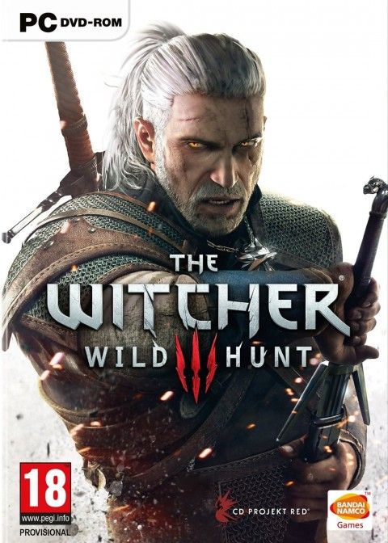

On retrouve enfin Geralt de Riv, notre bien aimé sorceleur, après tant de temps la ou nous l'avions laissé après la fin du précédent opus ! CDProjekt nous a réservé de grosses surprises avec cette licence jusqu'alors peu connue le joueur se retrouve projeté dans un Action-RPG qui a lieu dans un monde ouvert. Notre héro se lance a le recherche de sa fille adoptive, Ciri, pourchassée par la chasse sauvage. Geralt devra explorer tout le royaume de Temeria et Redania ainsi que les îles de Skellige, faire face a tous types de monstres et adapter son style de combat car chaque monstre est unique. Les choix réalisés tout au long du jeu ont des répercutions sur l'avancée du jeu. Faites bien attention a tous les choix que vous allez faire car ils auront a un moment ou a un autre des conséquences qui peuvent changer le jeu du tout au tout. Vous devrez aussi apprendre tout ce que doit savoir un sorceleur pour améliorer vos techniques de combat et pouvoir combattre de la façon qui vous correspond le mieux (magie, bourrin, alchimie). Les DLC disponnibles sont de vraies histoires a part qui apportent leurs lots d'intrigues et sont vraiment bien fournis en terme d'heures de jeu, les scénarios sont prennants et très entrainants. Rien a dire sur ce jeu mis a part qu'il est en très bonne place pour détrôner les meilleurs Action-RPG déjà en tête de liste avec l'édition GOTY qui vaut largement son prix.